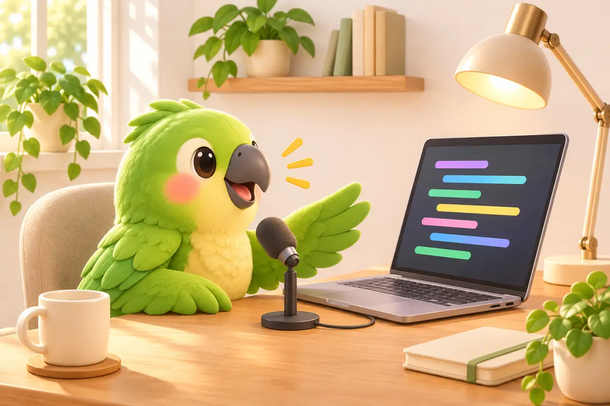

用 iPhone 相機掃描學舌鳥 iPhone 鍵盤 · NT$150 買斷
用 iPhone 相機掃描學舌鳥 iPhone 鍵盤 · NT$150 買斷Parroting Journal
Mac 使用技巧與效率工具
從真實使用情境出發，分享語音輸入、文字溝通與 Mac 工作方法。

Mac · 2026-11-14
用語音輸入寫程式：對 Claude Code、Cursor、Codex 口述 Prompt 的設定與排障
在 Mac 上對 Claude Code、Cursor、Codex 用講的寫 Prompt：中英夾雜的技術名詞怎麼辨識準、邊想邊講的改口怎麼免費整理，以及貼不進去、快捷鍵衝突、藍牙耳機漏字的排障做法。
閱讀全文 →
iPhone · 2026-11-08
學舌鳥 iPhone 版上架，登上 App Store 生產力工具付費榜第 1 名
學舌鳥 iPhone 版上架後登上台灣區 App Store 生產力工具付費榜第 1 名。整理 iPhone 語音鍵盤怎麼用、和免費 Mac 版怎麼透過 iCloud 共用詞典與改寫格式，以及購買前要知道的限制。
閱讀全文 →
Mac · 2026-11-05
Mac 本機語音辨識模型怎麼選？SenseVoice、Qwen3-ASR、Breeze-ASR、Whisper 比較
Mac 離線語音輸入該選 SenseVoice Small、Qwen3-ASR、Breeze-ASR-25 還是 Whisper？比較檔案大小、速度、中文錯字率與台灣華語、中英夾雜表現，並教你用 2 分鐘朗讀錄音測自己的聲音。
閱讀全文 →
Mac · 2026-11-02
語音輸入一直打錯人名和術語？從詞典到專屬語音模型的三層解法
語音輸入老是把同幾個詞打錯？拆解個人詞典、語氣提醒本機微調、專屬語音模型（SenseVoice LoRA）三層做法各修得了什麼、修不了什麼，附開發者實測錯字率與踩過的坑。
閱讀全文 →
Mac · 2026-10-31
Typeless 替代方案：7 款 Mac 語音輸入比較（繁體中文、免費、本機處理）
想找 Typeless 的替代或平替？比較 Wispr Flow、Superwhisper、VoiceInk、Handy、OpenWhispr、macOS 聽寫與學舌鳥的價格、繁體中文、本機處理與隱私。
閱讀全文 →
Mac · 2026-10-27
Mac 中文語音輸入怎麼用？從內建聽寫到 AI 整理與翻譯
Mac 中文語音輸入完整教學：比較系統內建聽寫與學舌鳥，了解語音輸入、口語整理、翻譯、語氣提醒及個人詞典。
閱讀全文 →